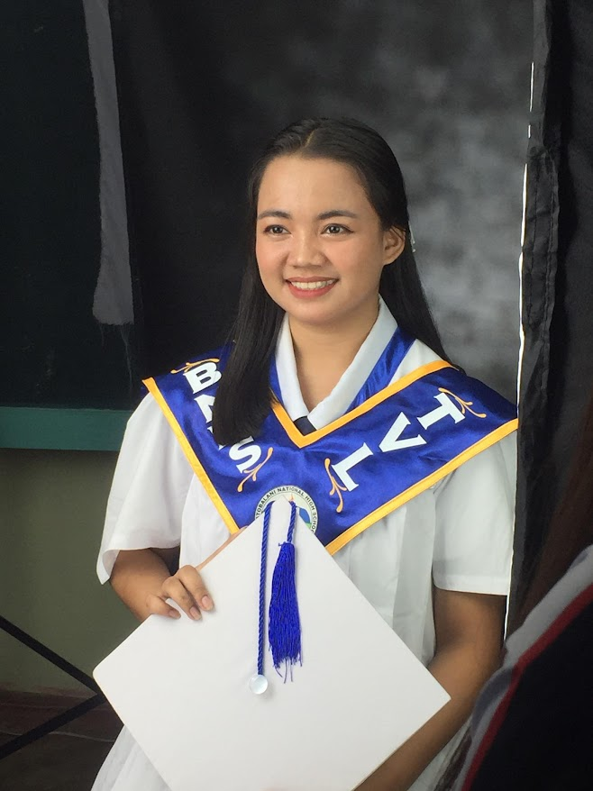
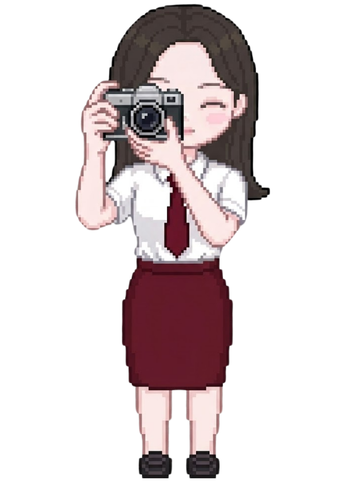

Concepts, Technicalities, Photo Analysis & Critical Viewing Skills
Photography has become one of the most powerful forms of communication. Every scroll through social media tells a story through images. But how many of us truly understand what goes into making a photograph — or how to critically read one?
Key Concepts Covered:
Modern photography emerged in 1839 with the daguerreotype, succeeding centuries of the camera obscura. Glass plates → flexible film → 21st-century digital revolution.
The evolution of the medium has fundamentally democratized the craft, shifting it from a highly specialized scientific endeavor to a universal daily practice.
The three pillars of proper exposure work in balance — changing one requires adjusting the others to maintain the correct lighting.
Photography serving the public good is ethically justified. The greatest good for the greatest number supports using images as tools for social change.
Moral duty demands photographers obtain informed consent. Altering images to mislead the public is inherently unethical — regardless of outcome.
A virtuous photographer exercises honesty, empathy, and respect — choosing angles that represent subjects with dignity.
Technical decisions are inherently narrative. A wide-angle perspective of a protest emphasizes collective scale; a telephoto close-up prioritizes individual pathos. Both are factually accurate — but framing dictates perceived reality.
Abiera · Ajento · Del Barrio · Ibita · Gozo · Laceda · Nael · Pomada · Rawat · Sacayan · Tabanao · Caranto

The Joey Velasco Documentary · Hapag ng Pag-asa
Joey Velasco's documentary reveals that his paintings were not merely works of art — they were expressions of faith, struggle, and compassion. While creating Hapag ng Pag-asa, he was ill, depressed, and confronting mortality. Painting became his surrender and his search for light.
Unlike artists who seek recognition, Joey's purpose was deeper: to use art as a bridge between privilege and poverty, visibility and invisibility.
Date Viewed: February 12, 2026
Subject: GE ELEC 6
Student: Katrinca Claire T. Ibita · BSIT 2A
Focus: Understanding art as a medium for profound social commentary and empathetic storytelling.
The most powerful moment came when he returned to the children who were his subjects — he didn't just capture their struggles on canvas; he helped them find homes and education.
This distinction — poverty normalized for them and numbness settling in us — is what the documentary forces us to confront. We have become so used to seeing poverty that we stopped feeling it.
What this taught me: Life only gains meaning when it is shared. Real legacy is not fame — it is the lives we choose to care for and change. Joey Velasco did not just create art; he used art as a call to sit at the table of responsibility.
This documentary deepened my understanding of what art can be. In the context of GE ELEC 6, Velasco's work is a masterclass in art as social commentary.
Reflections on Quizzes, Long Quizzes, and the Midterm Examination
Our first quiz set the groundwork for the semester, testing our knowledge of basic art terminology, mediums, and techniques.
Reflection: This quick assessment reminded me that appreciating art starts with knowing its vocabulary. Understanding terms like "Curation," "Additive process," and "Medium" gave me the right lenses to view subsequent artworks.
The long quiz dove deeper into critical viewing, exploring how we extract meaning from both traditional art and modern media like film.
Auteur theory and visual reading are practical tools for decoding embedded messages.
The Midterm Examination tested our holistic understanding of art appreciation, from basic definitions to complex ethical and social interpretations.
Reflection: Reviewing these questions shows how much my perspective has broadened. Art is no longer just "decoration"—it's a reflection of societal struggles, personal interpretation, and cultural history. Learning to differentiate the author's intent from the audience's meaning changed how I consume all media.
Growth, Challenges, and Creative Discoveries
As a BSIT student, I am used to logic, rigid syntax, and building systems that function perfectly. Coming into Reading Visual Arts, I felt slightly out of my element. Art doesn't compile or throw an error; it simply exists to be felt.
However, this experience taught me that design is universal. The same principles of balance and harmony I use when designing an app interface apply directly to a painter organizing their canvas.
Parallels I Discovered:
The most significant skill I gained was Visual Literacy—the ability to "read" an image. Before GE ELEC 6, I would look at a photograph and just see a landscape. Now, I see leading lines, the rule of thirds, and the careful manipulation of exposure.
This experience forced me to slow down. In a fast-paced digital world, learning to stop, observe, and critically analyze a single piece of art has been incredibly grounding.
Thoughts on the learning environment and instruction
I am proud of the effort I put into this course. Stepping away from technical subjects to engage with history and aesthetics was refreshing.
If I could improve one thing, it would be to trust my creative instincts more during the practical outputs instead of worrying about making them "perfect." The process of making art is just as important as the final product.
The progression of GE ELEC 6 was exceptionally well-structured. Starting from basic elements and moving toward complex critical analysis allowed us to build our knowledge step-by-step. The exams effectively synthesized what we learned in practical exercises.
The inclusion of documentaries like Joey Velasco's Hapag ng Pag-asa anchored the theoretical concepts into real, emotional human experiences.